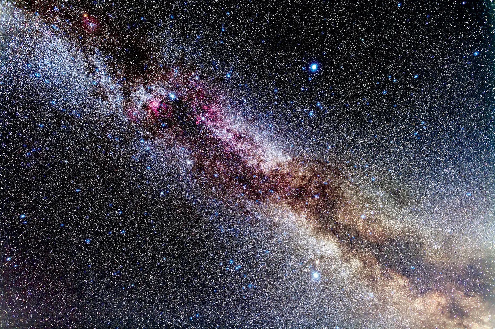

Space exploration has always been an inspiring field that pushes the boundaries of our knowledge. It has led to countless innovations and a deeper understanding of the universe.
Our solar system contains 8 planets, with jupiter being the largest. It is located as the 5th planet from the sun.
Enjoy this captivating image of outer space:
For further reading on space exploration, visit the NASA website.
Here is an inspirational quote about space:
That's one small step for man, one giant leap for mankind.
For a quick glossary, see the following: